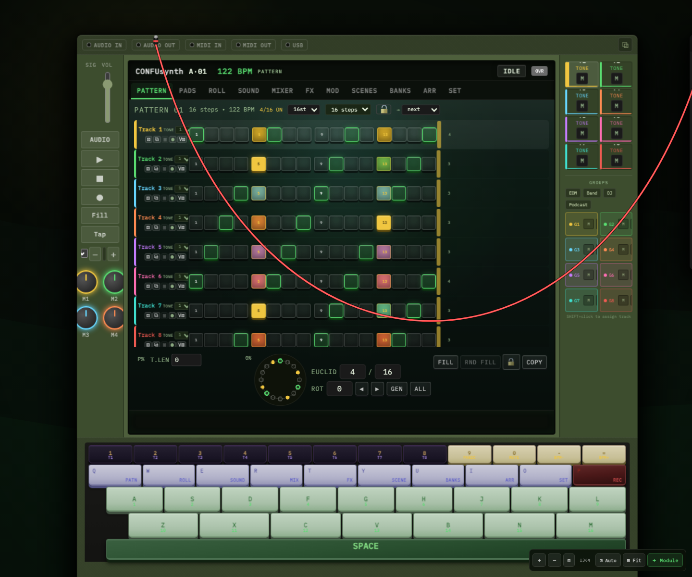

Eight tracks, up to 64 steps
Per-step accents, probability, trig conditions, parameter locks, and swing — plus a Euclidean generator with rotation and tap tempo.
Browser-native music studio
CONFUstudio is a full groovebox, synth, sampler, and mixer that runs entirely in a browser tab. Open a URL and you're producing — nothing to download, nothing to license.
Open source · Apache-2.0 · Runs 100% in your browser · Installable PWA

Everything in one tab
Sequencing, sound design, sampling, mixing, effects, and arrangement — the full signal chain, running on the Web Audio API.
Per-step accents, probability, trig conditions, parameter locks, and swing — plus a Euclidean generator with rotation and tap tempo.
Tone, noise, sample, MIDI, wavetable "plaits", granular "clouds", and modal "rings" — each with ADSR, filter, drive, and an arpeggiator.
Drop in files or capture the mic, then pitch cleanly through an AudioWorklet sinc resampler with 4-point cubic Hermite interpolation.
Per-track pan and sends, mute and solo, flexible group routing, and a live master spectrum to keep an eye on the mix.
Draggable 3-band EQ, compressor, convolution reverb, synced delay, bitcrusher, sample-rate reduction, and performance stutter.
Morph between two full scenes with a crossfader and macro controls for hands-on, live changes without stopping playback.
Eight banks of sixteen patterns, chained in an arranger with Intro, Verse, Chorus, Bridge, and Outro sections.
Bridge a local model — OpenAI, Anthropic, or Ollama — for concrete next moves. Fully optional; the app works 100% offline.
The flagship instrument
Every track hosts its own engine. Switch a drum track to a granular texture, a bassline to a modal resonator, or an arp to a wavetable lead — without leaving the sequencer.
Built on the Web Audio API and a hand-written AudioWorklet: a sinc resampler for clean pitch-shifting, convolution reverb across room, hall, plate, spring, cave, and studio impulses, and a multimode filter with LP, HP, BP, notch, and peak modes.
Yours to run
No accounts, no telemetry, no upsell. CONFUstudio is Apache-2.0 licensed and your projects never leave the browser.
Add it to your dock or home screen and it launches like a native app — fully offline-capable.
MIDI in and out, plus 24-ppqn MIDI clock with drift correction to keep external gear in sync.
Nothing is tracked and nothing is uploaded. Your sessions and samples stay on your machine.
Read the source, file an issue, or fork it. IrgenSlj/Confustudio.
Ready when you are
It opens in a tab in seconds. Bring headphones — you'll want to make something before you close it.